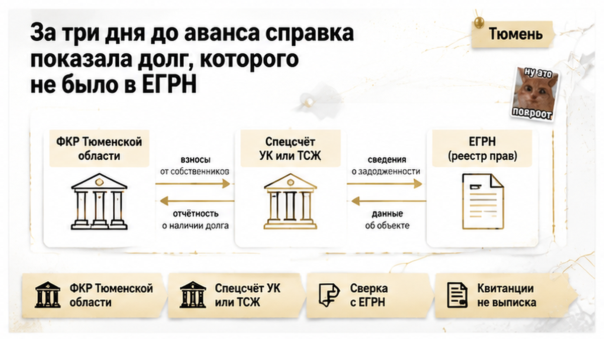
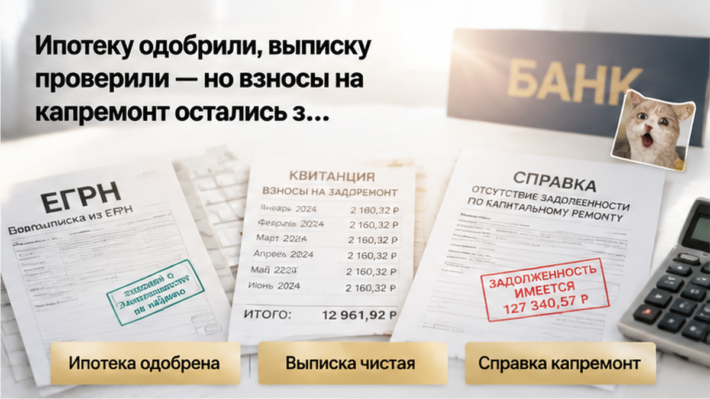
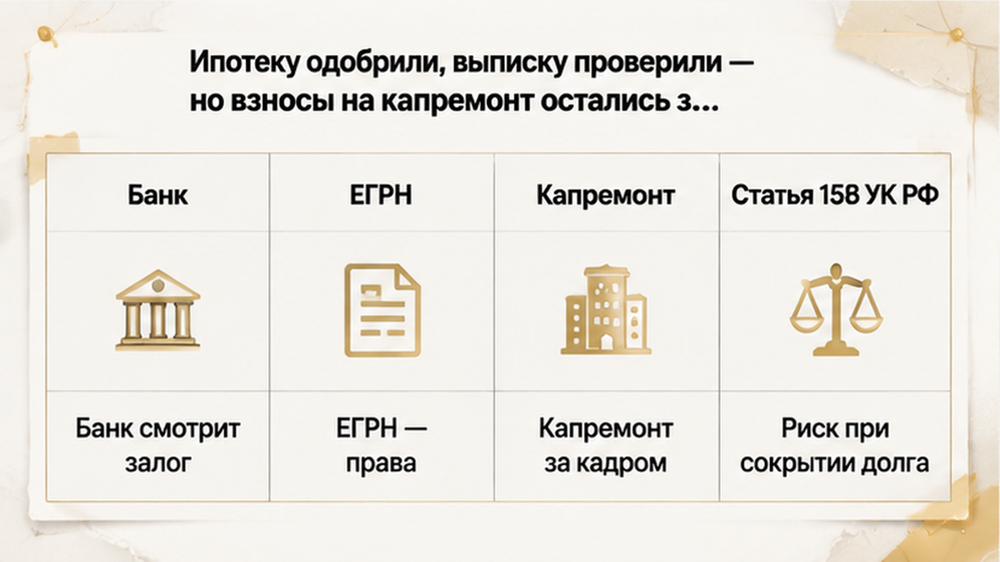
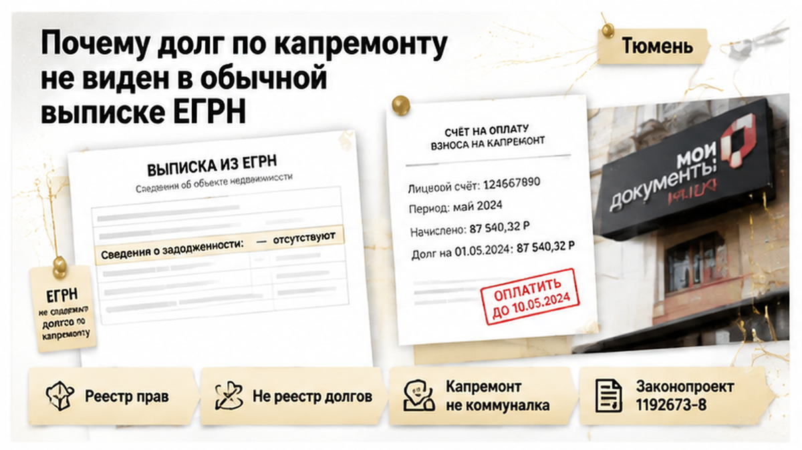
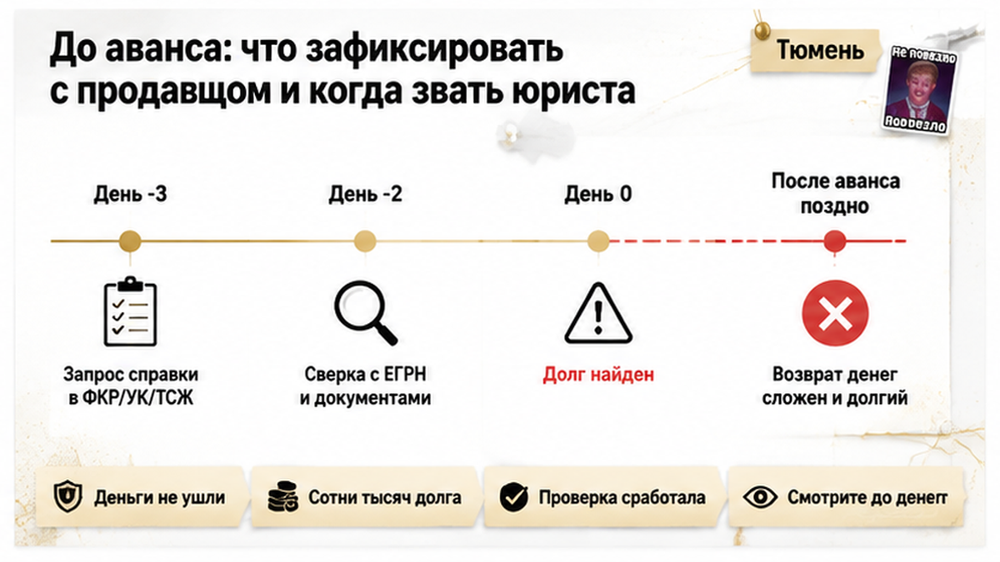

Сделку в Тюмени остановил не арест, не прописанный ребёнок и не спор о праве. Её остановила строка, которой в выписке ЕГРН не было вовсе.
Семья выбрала вторичку в панельном доме: цена сошлась, банк одобрил ипотеку под конкретный объект, дату сделки согласовали. Выписка ЕГРН выглядела образцово — право зарегистрировано, обременений и ограничений нет. Продавец выложил на стол квитанции, видимой просрочки в них не читалось. За три дня до аванса — уже после юридической проверки и одобрения банка — покупатели запросили сведения о взносах на капитальный ремонт и увидели накопленный долг в сотни тысяч рублей. Ждать, пока продавец его закроет и принесёт подтверждение, они отказались: аванс не внесли, деньги не передали, сделка встала.
Я Святослав Шакин, The Риэлтор, Тюмень. Разбираю тюменскую вторичку по документам, а не по ощущениям: Telegram — свежие кейсы и ответы по конкретной квартире. Всё дублирую в MAX.

Случай разбираю обезличенно: без адреса, фамилий и точной цифры. Это редакционный тюменский казус. Но последовательность в нём типовая, и она здесь важнее суммы.
Сначала всё шло по учебнику. Квартира понравилась, торг закрыли, банк одобрил ипотеку. Проверка прошла спокойно: собственник один, право зарегистрировано, ограничений и обременений в выписке нет. На этом месте большинство покупателей уже мысленно расставляет мебель.
Стороны согласовали дату и двинулись к авансу. И тут кто-то из покупателей задал вопрос, который обычно не задаёт никто: а что с взносами на капитальный ремонт? Не вода, не свет, не содержание жилья — именно капремонт.
Продавец не растерялся: «Вот квитанции, я всё платил». Только квитанция — не выписка по лицевому счёту. Она показывает начисления за период и факт отдельных платежей, но не подтверждает, что за прошлые годы по счёту не висит остаток. Ровно та же ловушка, что в истории, где продавец показал справку о закрытии ипотеки, а банк всё ещё держал залог: бумага в руках и подтверждённый факт — разные вещи.
Покупатели запросили сведения отдельно — там, где по этому дому ведут учёт взносов на капремонт. И получили не пени за месяц, а сумму, которая копилась годами и в стандартный пакет документов к сделке просто не входила.
До аванса оставалось три дня. Деньги ещё не двигались — и только поэтому история закончилась спором о сроках, а не разбирательством о том, кто теперь платит.


Три уровня проверки прошли мимо одного и того же. Это не разгильдяйство, это устройство системы.
Банк, одобряя ипотеку, смотрит на заёмщика и на предмет залога: ликвидность, оценку, зарегистрированное право, отсутствие ограничений. Задолженность по взносам на капремонт в этот периметр по умолчанию не входит — если конкретный банк не поставил такое условие отдельно.
Выписка ЕГРН отвечает на свой вопрос: кто собственник, что за объект, какие права и какие зарегистрированные ограничения на нём есть. Обесценивать её глупо, это по-прежнему базовый документ сделки. Просто долг по капремонту она не показывает — реестр про это и не рассказывает. У меня уже был разбор, где одобренная ипотека и «чистая» выписка не закрыли риск: пакет бывает формально полным и при этом не отвечает на вопрос, который вас разорит.
Квитанции продавца закрывают ещё меньше. Они говорят, что человеку начисляли и он что-то платил. Накопленный остаток всплывает при сверке начислений, перерасчётов, площади помещения и данных собственника.
А теперь то, ради чего эту проверку вообще делают до денег. По части 3 статьи 158 Жилищного кодекса при переходе права собственности к новому собственнику переходит неисполненная обязанность по уплате взносов на капитальный ремонт. Исключение одно: период, когда прежним собственником были Российская Федерация, субъект РФ или муниципалитет.
То есть капремонт ведёт себя не как коммуналка. Долги за воду, свет, отопление и содержание жилья, как правило, остаются на прежнем собственнике, а новый платит с момента возникновения своего права. Взносы на капремонт закон привязывает к помещению — и вместе с ключами покупателю может достаться чужая недоплата за годы.
Речь при этом не о запрете регистрации. Речь о деньгах, которые придётся отдать уже после неё — своими.
Дальше был разговор, который в моей практике повторяется чаще, чем хотелось бы.
Продавец не спорил и не прятался. «Закрою сам, возьму справку об отсутствии задолженности, выйдем на сделку позже» — реакция взрослого человека, без истерики. Звучит разумно.
Только у покупателей в голове уже стояли дата регистрации, ставка по одобренной ипотеке и переезд, привязанный к концу лета.
Я разложил им выбор без украшений. Первый вариант — ждать, пока продавец закроет накопленную сумму и подтвердит это документом; сроки тут никто не гарантирует, потому что погашение и выдача подтверждения зависят от организации, которая ведёт учёт по этому дому, а не от нашего желания успеть к пятнице. Второй — идти на сделку с условием в договоре: удержать сумму из цены, зачесть её в расчётах, развести деньги через аккредитив или эскроу так, чтобы часть уходила продавцу только после подтверждения погашения. Третий — просто выйти.
И тут же честная оговорка, без которой второй вариант выглядит красивее, чем он есть. Ни один из этих механизмов не универсален: как построить расчёты, решают условия сделки и требования банка, который выдаёт кредит. Банк смотрит на свой пакет документов, а не на нашу договорённость на кухне. Даже прописанная в договоре обязанность продавца погасить долг и отвечать за задолженности, выявленные позже, — не автоматическая гарантия, что деньги потом вернутся. Универсального способа взыскать с бывшего собственника то, что уже приехало к новому, не существует.
Покупатели выбрали третий.
Не потому, что квартира стала плохой. Потому что за три дня до аванса выяснилось: пакет документов был неполным — и никто не мог сказать, что ещё не всплывёт. Аванс не внесён, деньги не переданы, расписок никто не писал. Семья потеряла время и стоимость проверки. Больше — ничего.
Для меня это нормальный финал. Сделку останавливают не тогда, когда всё идеально, а тогда, когда вопрос всплыл раньше денег. Похожая развязка была, когда поддельное согласие супруги остановило сделку перед авансом: дорого по нервам, но обратимо. А вот когда порядок обратный и расписку на квартиру написали, а денег на счёте нет, разговор идёт уже не о проверке, а о возврате.

Теперь по существу: выписка была чистой и при этом не врала.
ЕГРН — реестр прав, а не реестр долгов. Он отвечает, кто собственник, что за объект, какие права зарегистрированы и какие ограничения или обременения на объекте есть. Взносы на капитальный ремонт туда обычно не попадают: это обязательство перед региональным оператором или владельцем специального счёта, а не запись о праве.
Исключение бывает, но оно другой природы. Если из-за задолженности дело дошло до исполнительного производства и зарегистрирован арест или запрет регистрационных действий — вот тогда ограничение в выписке видно. То есть реестр показывает не сам долг, а последствие, до которого долг успел дорасти. В нашем случае не успел — и поле честно осталось пустым.
Отсюда важное разведение, иначе история читается страшнее, чем она есть. Наличие долга по капремонту само по себе не значит, что Росреестр не зарегистрирует переход права. И не значит, что управляющая компания или фонд могут отменить сделку — такого механизма нет. Риск покупателя здесь финансовый и договорный: обязанность приезжает вместе с квартирой, и платить по ней будет новый собственник. По части 3 статьи 158 Жилищного кодекса неисполненная обязанность по уплате взносов на капремонт переходит к новому собственнику; исключение — период, когда прежним собственником были Российская Федерация, субъект РФ или муниципалитет.
И третье, где путаются почти все: капремонт — это не коммуналка. Долги за воду, свет, отопление и содержание жилья, как правило, остаются на прежнем собственнике, новый платит с момента возникновения своего права. Учёт ведут разные организации, и справка из УК о том, что перед ней ничего не висит, не подтверждает отсутствие задолженности перед региональным оператором. Два разных вопроса, два разных документа.
Отдельно — про надежду на будущее. В Госдуме зарегистрирован законопроект № 1192673-8: предлагает оставлять такой долг за прежним собственником и раскрывать сведения через ЕГРН или Госуслуги. На конец августа 2026 года он не принят — первое чтение, дата заседания не назначена. Планировать сделку по нему нельзя. Работаем по действующей норме.
Первый вопрос звучит не «дайте справку». Он звучит так: «как в этом доме формируется фонд капитального ремонта?» От ответа зависит, к кому вообще идти.
Общий котёл — сведения запрашивают у НО «Фонд капитального ремонта многоквартирных домов Тюменской области», сайт fkr72.ru. Специальный счёт — учёт ведёт тот, кто этот счёт обслуживает: управляющая компания или ТСЖ. Фраза «долгов нет» из двух разных источников закрывает два разных участка. Путать их нельзя.
На сайте фонда есть с чего начать: «Найти свой дом в региональной программе», «Узнать задолженность», «Проверить и оплатить задолженность», плюс шаблоны документов для обращения. Понадобятся данные объекта и номер лицевого счёта — его находят через ТРИЦ и сервисы фонда. Очно: Тюмень, ул. Новгородская, д. 10, офис 404, телефон +7 (3452) 393-107. Это рабочий маршрут, а не «где-то в интернете».
Дальше идёт то, что пропускают чаще всего, — сверка. Справка полезна ровно настолько, насколько она относится именно к вашей квартире. Сверяйте с выпиской ЕГРН адрес, номер помещения, площадь и сведения о собственнике. Расхождение в площади или в номере — признак того, что документ описывает не тот объект, а начисления в нём вам ничего не гарантируют.
И про квитанции. Пачка платёжек — не выписка по лицевому счёту. Накопленный остаток вылезает при сверке начислений, перерасчётов, площади и данных собственника, а не при взгляде на последний месяц. Та же механика, что в истории, где продавец показал справку о закрытии ипотеки, а банк всё ещё держал залог: бумага на столе — это версия события, а не подтверждённый факт.
| Документ | Кто выдаёт | Что подтверждает | Что не закрывает |
|---|---|---|---|
| Выписка ЕГРН | Росреестр | Права, характеристики объекта, зарегистрированные ограничения и обременения | Долг по взносам на капремонт, пока он не превратился в зарегистрированный запрет или арест |
| Справка УК или ТСЖ | Управляющая организация дома | Расчёты по её лицевым счетам; при спецсчёте — взносы на капремонт | Задолженность перед региональным оператором, если фонд формируется в общем котле |
| Сведения регионального фонда | ФКР Тюменской области | Начисления и задолженность по взносам на капремонт при общем котле | Коммуналку, содержание жилья и расчёты с УК |
| Квитанции продавца | Продавец | Факт отдельных платежей за конкретные периоды | Накопленный остаток, перерасчёты и итог по лицевому счёту |

Деталь, которую обычный покупатель не знает, а профи держит в голове всегда: справка об отсутствии задолженности по взносам на капремонт не входит в обязательный пакет для регистрации перехода права. Росреестр её не запросит. Она появляется в сделке только потому, что этого хочет банк, покупатель или так договорились стороны. Значит, инициатива ваша — и заявить её нужно до денег.
Юрист нужен не «на всякий случай», а в трёх понятных ситуациях. Продавец отказывается раскрывать сведения. Продавец не согласен на проверку. Начисления спорные: перерасчёты, разночтения по площади, непонятно, кто держит спецсчёт. И честная оговорка: универсального способа взыскать деньги с бывшего собственника после покупки не существует. Договорная страховка снижает риск, но в ноль его не превращает — ровно как в случае, где расписку написали, а денег на счёте не оказалось.
Про законопроект № 1192673-8 спрашивают часто: там предлагают оставлять такой долг за прежним собственником и раскрывать сведения через ЕГРН или Госуслуги. Зарегистрирован 31 марта 2026 года, предварительное рассмотрение прошло 20 апреля, дата первого чтения не назначена. На сегодня это не право, а намерение. Планировать сделку по нему нельзя — работаем по части 3 статьи 158 ЖК.
Достаточно ли чистой выписки ЕГРН, или справку о долгах по капремонту нужно запрашивать всегда — даже когда продавец показывает квитанции? Напишите в комментариях: интересно, сколько тюменских сделок в этом году прошло вообще без такого запроса.
Разбираю такие ситуации по конкретным домам и адресам — пишите, если нужно понять, к кому идти за сведениями именно по вашей квартире: Telegram или MAX.
Та семья не потеряла ничего, кроме нескольких часов и стоимости проверки. Аванс не внесли, деньги не передали, договор с чужим обязательством внутри не подписали. Один дополнительный запрос за три дня до расчётов остановил сумму, которую пришлось бы платить своими деньгами уже после регистрации. Это не сорванная сделка. Это сработавшая проверка.
Вторичку в Тюмени покупают и будут покупать: панельные дома, ипотека, обычные семьи с датой переезда в календаре. Вопрос не в том, опасен ли рынок, а в том, где вы ставите точку контроля. Пока деньги у вас — у вас и ручка: можно запросить, сверить, потребовать погашения до сделки или спокойно выйти. После аванса тот же разговор стоит дороже. Смотрите до денег — и покупайте.